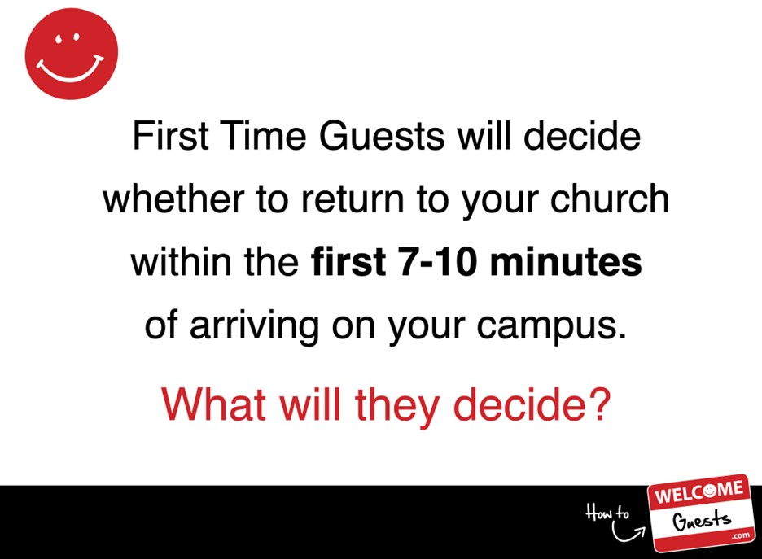

First Impressions Matter
Do you know how long it takes for someone to make a first impression of your church home? Statistics say it’s approximately 7-10 minutes from the time a new prospective attendee makes a decision of whether they will be returning for a second visit. So are you ready?
